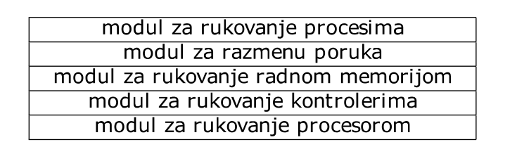
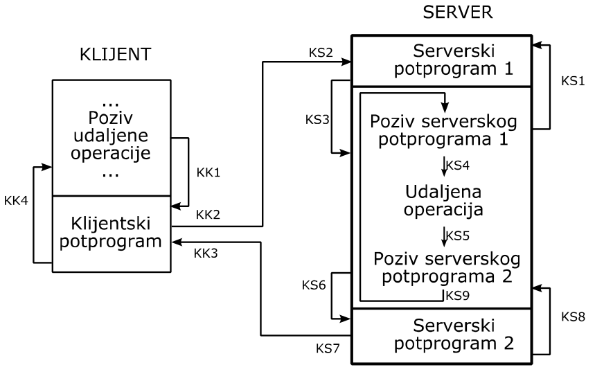
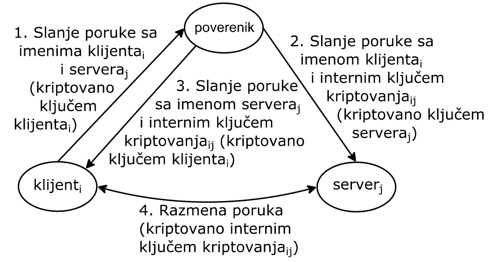
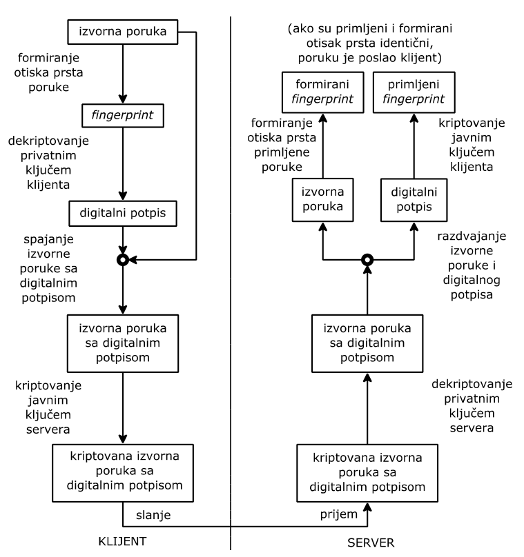

Klasifikacija Operativnih Sistema
Veljko Petrović
2023-05
Klasifikacija Operativnih Sistema
Kriterijum klasifikacije OS
- Jedan od mogućih kriterijuma za klasifikaciju operativnih sistema je
vrsta računara kojim operativni sistem upravlja. Po tom kriteriju mogu
se izdvojiti:
- operativni sistemi realnog vremena (RTOS)
- distribuirani operativni sistemi
Operativni sistemi realnog vremena
- Operativni sistemi realnog vremena (real time operating system) su
namenjeni za primene računara u kojima je neophodno obezbediti reakciju
na spoljni događaj u unapred zadanom vremenu.
- Ovakvi operativni sistemi su, zbog toga, podređeni ostvarenju što
veće brzine izvršavanja korisničkih programa.
Operativni sistemi realnog vremena
- Za operativne sisteme realnog vremena je tipično da su, zajedno sa
računarom, ugrađeni (embedded) u sistem, čije ponašanje se ili samo
prati, ili čijim ponašanjem se upravlja.
- Zadatak operativnih sistema realnog vremena je da samo stvore
okruženje za korisničke programe, jer komunikaciju sa krajnjim
korisnikom obavljaju korisnički programi.
- Zato se operativni sistemi realnog vremena obično koriste samo na
programskom nivou.
Operativni sistemi realnog vremena
- Modul za rukovanje procesima je podređen potrebi brzog stvaranja i
uništenja procesa, njihove brze i lake saradnje, kao i brzog
preključivanja procesora sa procesa na proces.
- Zato obično svi procesi dele isti fizički adresni prostor.
- To je moguće, jer ne postoji potreba za međusobnom zaštitom procesa,
pošto oni imaju istog autora, ili njihovi autori pripadaju istom
timu.
Operativni sistemi realnog vremena
- Modul za rukovanje datotekama nije obavezni deo operativnog sistema
realnog vremena, jer sve primene realnog vremena ne zahtevaju masovnu
memoriju.
- Kada rukovanje datotekama postoji, ono obično podržava kontinuirane
datoteke, zbog brzine pristupa podacima.
- Mane kontinuiranih datoteka se ovde ne ispoljavaju, jer su unapred
poznati svi zahtevi primene.
Operativni sistemi realnog vremena
- Modul za rukovanje radnom memorijom obično podržava efikasno
zauzimanje memorijskih zona sa unapred određenom veličinom, da bi se
izbegla ili umanjila eksterna fragmentacija.
- Modul za rukovanje kontrolerima podržava tipične ulazne i izlazne
uređaje i, uz to, omogućava jednostavno uključivanje novih drajvera za
specifične uređaje.
- Pri tome se nude blokirajuće i neblokirajuće sistemske operacije,
ali i vremenski ograničene blokirajuće sistemske operacije.
Operativni sistemi realnog vremena
- Zahvaljujući neblokirajućim sistemskim operacijama, moguće je
vremenski preklopiti aktivnosti procesora i kontrolera.
- Vremenski ograničene blokirajuće sistemske operacije omogućuju
reakciju u zadanom vremenskom intervalu na izostanak željenog događaja,
odnosno, na izostanak obavljanja pozvane sistemske operacije.
Operativni sistemi realnog vremena
- Modul za rukovanje procesorom mora da obezbedi efikasno rukovanje
vremenom.
- Za to se često koriste posebni satovi - tajmeri.
- U sklopu toga, mora se obezbediti da aktivnost procesa bude završena
do graničnog trenutka (deadline scheduling).
- To se postiže sortiranjem deskriptora spremnih procesa po dužini
preostalog vremena do graničnog trenutka (earliest deadline first -
EDF).
Operativni sistemi realnog vremena
- Podrazumeva se da ovo sortiranje dovodi na prvo mesto deskriptor
procesa sa najkraćim preostalim vremenom do graničnog trenutka, tako da
je njegov proces prvi na redu za aktiviranje.
- Ako je aktivnost procesa periodična sa unapred određenim i
nepromenljivim trajanjem aktivnosti u svakom periodu, tada se procesima
mogu dodeliti prioriteti jednaki broju njihovih perioda u jedinici
vremena (rate monotonic scheduling).
Operativni sistemi realnog vremena
- Tako se može obezbediti da aktivnost procesa bude obavljena pre
kraja svakog od njegovih perioda.
- U svakom slučaju, postavljeni cilj raspoređivanja može da se ostvari
samo ako ima dovoljno procesorskog vremena za sve procese.
- Modul za rukovanje procesorom operativnog sistema realnog vremena
obično podržava mehanizam semafora, jer je on jednostavan za korišćenje,
brz i jer ne zahteva izmene kompajlera.
Distribuirani OS
- Distribuirani operativni sistemi upravljaju međusobno povezanim
računarima, koji su prostorno udaljeni.
- Potrebu za povezivanjem prostorno udaljenih (distribuiranih)
računara nameće praksa.
- S jedne strane, prirodno je da računari budu na mestima svojih
primena, na primer, uz korisnike ili uz delove industrijskih
postrojenja, koje opslužuju.
- Na taj način računari mogu biti potpuno posvećeni lokalnim
poslovima, koji su vezani za mesta njihove primene, pa mogu efikasno
obavljati ovakve poslove.
Distribuirani OS
- S druge strane, neophodno je omogućiti saradnju između prostorno
udaljenih korisnika, odnosno obezbediti usaglašeni rad prostorno
udaljenih delova istog industrijskog postrojenja.
- Za to je potrebno obezbediti razmenu podataka između računara,
posvećenih pomenutim korisnicima, odnosno posvećenih pomenutim delovima
industrijskog postrojenja.
Distribuirani OS
- Za to je potrebno obezbediti razmenu podataka između računara,
posvećenih pomenutim korisnicima, odnosno posvećenih pomenutim delovima
industrijskog postrojenja.
- Radi toga, ovakvi, prostorno udaljeni računari se povezuju
komunikacionim linijama, koje omogućuju prenos (razmenu) podataka,
organizovanih u poruke.
- Na ovaj način nastaje distribuirani računarski sistem (distributed
computer system).
Distribuirani OS
- Za svaki od računara, povezanih u distribuirani računarski sistem,
je neophodno da sadrže procesor, radnu memoriju i mrežni kontroler.
- Prisustvo masovne memorije i raznih ulaznih i izlaznih uređaja u
sastavu ovakvih računara zavisi od mesta njihove primene i, u opštem
slučaju, nije obavezno.
Distribuirani OS
- Zato nema ni potrebe da ih podržava operativni sistem, prisutan na
računarima iz distribuiranog računarskog sistema.
- Ovakav operativni sistem ima smanjenu funkcionalnost u odnosu na
“običan” operativni sistem, pa se naziva mikrokernel (microkernel).
Distribuirani OS
- Hijerarhijska struktura mikrokernela je prikazana na slici: 
Distribuirani OS
- Mikrokernel ne sadrži modul za rukovanje datotekama, jer on nije
potreban za svaki od računara iz distribuiranog računarskog
sistema.
- Zato se ovaj modul prebacuje u korisnički sloj (iznad mikrokernela),
koji je predviđen za korisničke procese.
Distribuirani OS
- Modul za rukovanje procesima se oslanja na modul za razmenu poruka,
da bi pristupio izvršnoj datoteci koja je locirana na nekom drugom
računaru.
- Modul za razmenu poruka se oslanja na modul za rukovanje radnom
memorijom, radi dinamičkog zauzimanja i oslobađanja bafera, namenjenih
za privremeno smeštanje poruka.
Distribuirani OS
- Modul za razmenu poruka se oslanja i na modul za rukovanje
kontrolerima, u kome se nalazi drajver mrežnog kontrolera, posredstvom
koga se fizički razmenjuju poruke.
- Na kraju, modul za razmenu poruka se oslanja i na modul za rukovanje
procesorom.
- Ovo je potrebno, da bi se, na primer, privremeno zaustavila
aktivnost procesa do prijema poruke, bez koje nastavak aktivnosti nije
moguć, ali i da bi se moglo reagovati na dugotrajni izostanak očekivanog
prijema poruke.
Distribuirani OS
- Modul za razmenu poruka nije samo na raspolaganju modulu za
rukovanje procesima.
- On sadrži sistemske operacije, koje omogućuju razmenu poruka,
odnosno saradnju između procesa, aktivnih na raznim računarima, kao i
saradnju između procesa, aktivnih na istom računaru.
- Tipičan oblik saradnje procesa je da jedan proces traži uslugu od
drugog procesa.
Distribuirani OS
- To je potrebno, na primer, kada jedan proces želi da na svom
računaru, koji je bez masovne memorije, stvori novi proces.
- On se, tada, posredstvom modula za rukovanje procesima, obraća
drugom procesu, aktivnom na računaru sa masovnom memorijom, zahtevajući
od njega, kao uslugu, da mu pošalje sadržaj odgovarajuće izvršne
datoteke.
Distribuirani OS
- Uobičajeni način traženja i dobijanja usluge se sastoji od pozivanja
operacije, čije obavljanje dovodi do pružanja tražene usluge.
- Ako pozivana operacija ne odgovara potprogramu koji se lokalno
izvršava u okviru aktivnosti procesa pozivaoca, nego odgovara
potprogramu koji se izvršava u okviru aktivnosti drugog, udaljenog
procesa, aktivnog na udaljenom računaru, reč je o pozivu udaljene
operacije (Remote Procedure Call - RPC).
- Proces, koji poziva udaljenu operaciju, se nalazi u ulozi klijenta
(primaoca usluge), a proces, koji obavlja udaljenu operaciju, se nalazi
u ulozi servera (davaoca usluge).
Poziv udaljene operacije (RPC)
- Poziv udaljene operacije liči na poziv (lokalne) operacije.
- Znači, on ima oblik poziva potprograma, u kome se navode oznaka
(ime) operacije i njeni argumenti.
- Ovakav potprogram se naziva klijentski potprogram (client stub), jer
je klijent njegov jedini pozivalac.
- U klijentskom potprogramu je sakriven niz koraka, koji se obavljaju,
radi dobijanja zahtevane usluge.
Poziv udaljene operacije (RPC)
- U ove korake spadaju:
- pronalaženje procesa servera, koji pruža zahtevanu uslugu
- pakovanje (marshalling) argumenata (navedenih u pozivu klijentskog
potprograma) u poruku zahteva
- slanje serveru ove poruke zahteva
- prijem od servera poruke odgovora sa rezultatom pružanja zahtevane
usluge
- raspakivanje prispele poruke odgovora
- isporuka rezultata pružanja zahtevane usluge pozivaocu klijentskog
potprograma
Poziv udaljene operacije (RPC)
- Simetrično klijentskom potprogramu postoje dva serverska potprograma
(server stub).
- Njih poziva jedino server, a oni kriju više koraka, koji se
obavljaju, radi pružanja zahtevane usluge.
- Prvi od serverskih potprograma obuhvata:
- prijem poruke zahteva
- raspakivanje argumenata iz ove poruke
Poziv udaljene operacije (RPC)
- Drugi od serverskih potprograma obuhvata:
- pakovanje rezultata usluge (koju je pružio server) u poruku
odgovora
- slanje klijentu ove poruke odgovora.
- Između poziva ova dva serverska potprograma se nalazi lokalni poziv
operacije, koja odgovara zahtevanoj usluzi, odnosno, programski tekst,
koji opisuje aktivnost servera na pružanju zahtevane usluge.
Poziv udaljene operacije (RPC)
- Slika prikazuje redosled koraka klijenta i servera tokom poziva
udaljene operacije (kk1 do kk4 označavaju sekvencu koraka klijenta, a
ks1 do ks9 označavaju sekvencu koraka servera).
Poziv udaljene operacije (RPC)

Poziv udaljene operacije (RPC)
- Oslanjanje na poziv udaljene operacije olakšava posao programeru,
jer od njega krije, na prethodno opisani način, detalje saradnje
klijenta i servera.
- Pri tome, klijentski potprogram pripada biblioteci udaljenih
operacija.
- Ova biblioteka sadrži po jedan klijentski potprogram za svaku od
postojećih udaljenih operacija.
- Klijentski potprogram se generiše, zajedno sa serverskim
potprogramima, prilikom prevođenja programa, koji odgovara serveru.
Problemi poziva udaljene operacije (RPC)
- Uprkos nastojanju da što više liči na poziv lokalne operacije, poziv
udaljene operacije se značajno razlikuje od svog uzora.
- Te razlike su posledica koraka, sakrivenih u pozivu udaljene
operacije, koji uzrokuju da se u toku poziva udaljene operacije mogu da
pojave problemi, čija pojava nije moguća kod poziva lokalne
operacije.
Problemi poziva udaljene operacije (RPC)
- Tako je moguće:
- da se ne pronađe server, koji pruža zahtevanu uslugu
- da se, u toku prenosa, izgube ili poruka zahteva ili poruka
odgovora
- da dođe do otkaza ili servera, ili klijenta u toku njihovog
rada
Problemi poziva udaljene operacije (RPC)
- Ako nema servera, tada nije moguće pružanje tražene usluge.
- To je nemoguća situacija kod poziva lokalne operacije.
- Do istog rezultata dovode smetnje na komunikacionim linijama, koje
onemogućuju prenos bilo poruke zahteva, bilo poruke odgovora.
Problemi poziva udaljene operacije (RPC)
- Kada u očekivanom vremenu izostane prijem poruke odgovora, bilo zbog
gubljenja poruke zahteva, bilo zbog gubljenja poruke odgovora, jedino
što se na strani klijenta može uraditi je da se ponovo pošalje
(retransmituje) poruka zahteva.
- Pri tome je broj retransmisija ograničen.
Problemi poziva udaljene operacije (RPC)
- Ako je izgubljena poruka zahteva, njenom retransmisijom se stvara
mogućnost da ona stigne do servera i da on pruži traženu uslugu.
- Međutim, ako je izgubljena poruka odgovora, tada treba sprečiti da,
po prijemu retransmitovane poruke zahteva, server ponovi pružanje već
pružene usluge.
Problemi poziva udaljene operacije (RPC)
- Da bi server razlikovao retransmitovanu poruku od originalne,
dovoljno je da svaka originalna poruka ima jedinstven redni broj i da
server za svakog klijenta pamti redni broj poslednje primljene poruke
zahteva od tog klijenta.
- Prijem poruke sa zapamćenim rednim brojem ukazuje na retransmitovanu
poruku, koja je već primljena.
Problemi poziva udaljene operacije (RPC)
- Otkaz servera, izazvan kvarom računara, je neprijatan zbog teškoća
da se ustanovi da li je do otkaza došlo pre, u toku, ili posle pružanja
usluge.
- Zato je problematično da poziv udaljene operacije garantuje da će
zahtevana usluga biti pružena samo jednom, kao kod poziva lokalne
operacije.
- Na primer, na strani klijenta otkaz servera se ispoljava kao
izostajanje poruke odgovora.
Problemi poziva udaljene operacije (RPC)
- Tada retransmisija poruke zahteva može navesti ponovo pokrenutog
servera da još jednom pruži već pruženu uslugu, jer je, u ovom slučaju,
server izgubio, zbog otkaza, evidenciju o rednim brojevima poslednje
primljenih poruka zahteva od klijenata.
Problemi poziva udaljene operacije (RPC)
- Kod poziva lokalne operacije ovo se ne može desiti, jer otkaz
računara znači i kraj izvršavanja celog programa, bez pokušaja njegovog
automatskog oporavka.
- Garantovanje da će server pružiti zahtevanu uslugu samo jednom
podrazumeva upotrebu stabilne memorije (stable storage) koja je ima
visoku pouzdanost, pa može ispravno funkcionisati i u okolnostima otkaza
servera.
Problemi poziva udaljene operacije (RPC)
- Otkaz klijenta znači da server uzaludno pruža zahtevanu uslugu.
- Ovo se izbegava tako što server obustavlja pružanje usluga
klijentima, za koje ustanovi da su doživeli otkaz.
- To klijenti sami mogu da jave serveru, nakon svog ponovnog
pokretanja, ili to server može sam da otkrije, periodičnom proverom
stanja klijenata, koje opslužuje.
Problemi poziva udaljene operacije (RPC)
- Poziv udaljene operacije praktično dozvoljava da argumenti budu samo
vrednosti, a ne i adrese, odnosno pokazivači, zbog problema kopiranja
pokazanih vrednosti sa klijentovog računara na računar servera i u
obrnutom smeru.
- Pored toga, ako su ovi računari različiti, javlja se i problem
konverzije vrednosti, jer se, na primer, predstava realnih brojeva
razlikuje od računara do računara.
Problemi poziva udaljene operacije (RPC)
- Činjenica da se u okviru klijentskog potprograma javlja potreba za
pronalaženjem servera, ukazuje da u vreme pravljenja izvršnog oblika
klijentskog programa nije poznato koji server će usluživati
klijenta.
- U opštem slučaju, može biti više servera iste vrste i svaki od njih
može istom klijentu da pruži zatraženu uslugu.
Problemi poziva udaljene operacije (RPC)
- Radi toga se uvodi poseban server imena (name server, binder).
- Njemu se, na početku svoje aktivnosti, obraćaju svi serveri i
ostavljaju podatke o sebi, kao što je, na primer, podatak o vrsti usluge
koje pružaju.
- Serveru imena se obraćaju i klijenti, radi pronalaženja servera,
koji pruža zahtevanu uslugu.
- Na ovaj način se ostvaruje dinamičko linkovanje (dynamic binding)
klijenta, koji zahteva uslugu, i servera, koji pruža zahtevanu
uslugu.
Razmena poruka
- Klijentski i serverski potprogrami, koji omogućuju poziv udaljene
operacije, se oslanjaju na sistemske operacije modula za razmenu
poruka.
- Prva od ovih operacija je sistemska operacija zahtevanja usluge, a
druge dve su sistemske operacije prijema zahteva i slanja odgovora.
- Sistemska operacija zahtevanja usluge je namenjena klijentu i poziva
se iz njegovog potpograma.
- Ona omogućuje slanje poruke zahteva i prijem poruke odgovora.
Razmena poruka
- Sistemske operacije prijema zahteva i slanja odgovora su namenjene
serveru i omogućuju prijem poruke zahteva i slanje poruke odgovora.
- Sistemska operacija prijema zahteva se poziva iz prvog serverskog
potprograma, a sistemska operacija slanja odgovora se poziva iz drugog
serverskog potprograma.
- Ove tri sistemske operacije ostvaruju poseban protokol razmene
poruka (request reply protocol), koji je prilagođen potrebama poziva
udaljene operacije.
Razmena poruka
- Sistemske operacije zahtevanja usluge, prijema zahteva i slanja
odgovora su blokirajuće.
- Prva zaustavlja aktivnost klijenta do stizanja odgovora, ili do
isticanja zadanog vremenskog perioda.
- Druga zaustavlja aktivnost servera do stizanja zahteva, a treća
zaustavlja aktivnost servera do isporuke odgovora ili do isticanja
zadanog vremenskog intervala.
Razmena poruka
- Ove tri sistemske operacije su zadužene za prenos poruka.
- Pored slanja i prijema poruka, one:
- potvrđuju prijem poruka
- retransmituju poruke, čiji prijem nije potvrđen
- šalju upravljačke poruke, kojima se proverava i potvrđuje aktivnost
servera (čime se omogućuje otkrivanje njegovog otkaza) i slično.
Razmena poruka
- U nadležnosti ovih operacija je i rastavljanje poruka u pakete, koji
se prenose preko komunikacionih linija, sastavljanje poruka od paketa,
pristiglih preko komunikacionih linija, potvrda prijema paketa i
retransmisija paketa čiji prijem nije potvrđen, kao i prilagođavanje
brzine slanja paketa brzini kojom oni mogu biti primani (flow
control).
Razmena poruka
- Pomenute tri sistemske operacije koriste usluge drajvera sata, radi
reagovanja na isticanje zadanih vremenskih intervala, nakon kojih je, na
primer, potrebno ili retransmitovati poruku, ili poslati poruku
potvrde.
- One pozivaju i (neblokirajuće) operacije gornjeg dela drajvera
mrežnog kontrolera, radi fizičkog prenosa i prijema paketa.
- U donjem delu ovog drajvera se nalaze obrađivači prekida, zaduženi
za registrovanje uspešnog slanja i uspešnog prijema paketa.
Razmena poruka
- Sistemske operacije modula za razmenu poruka se brinu o baferima,
namenjenim za (privremeno) smeštanje poruka.
- Na primer, ako server nije pozvao sistemsku operaciju prijema
zahteva, jer je aktivan na usluživanju prethodno primljenog zahteva od
jednog klijenta, a pristigla je poruka zahteva od drugog klijenta, ova
poruka se smešta u slobodan bafer, da bi bila sačuvana i kasnije
isporučena serveru.
- Ako ne postoji slobodan bafer, poruka zahteva se odbacuje, uz,
eventualno, slanje odgovarajuće upravljačke poruke drugom klijentu.
Razmena poruka
- Svaka od poruka, koje se razmenjuju između procesa, se sastoji:
- od upravljačkog dela poruke
- od sadržaja poruke.
- Upravljački deo poruke obuhvata:
- adresu odredišnog procesa (kome se poruka upućuje)
- adresu izvorišnog procesa (od koga poruka kreće, a kome se,
eventualno, kasnije upućuje odgovor)
- opis poruke (njenu vrstu, njen redni broj i slično)
Razmena poruka
- Adresa (odredišnog ili izvorišnog) procesa sadrži jedinstven redni
broj računara, kome proces pripada (a po kome se razlikuju svi
računari), kao i port (jedinstven redni broj po kome se razlikuju
procesi, koji pripadaju istom računaru).
- Na osnovu rednog broja računara, mrežni kontroler utvrđuje da li
prihvata ili propušta poruku, a na osnovu porta se određuje proces, kome
se poruka isporučuje.
Razmena poruka
- U toku programiranja, zgodnije je, umesto ovih rednih brojeva,
koristiti imena za označavanje i računara i procesa.
- Korespondenciju između imena i rednih brojeva uspostavlja već
pomenuti server imena.
- Ove podatke o sebi ostavljaju svi serveri, kada se, na početku svoje
aktivnosti, obrate serveru imena.
Problemi razmene poruka
- Slaba tačka razmene poruka je sigurnost, jer su komunikacione linije
pristupačne svim korisnicima, pa je svaki od njih u poziciji da preuzima
tuđe poruke i da šalje poruke u tuđe ime.
- Sprečavanje preuzimanja tuđih poruka se zasniva na kriptovanju
(encryption) poruka, a sprečavanje slanja poruka u tuđe ime se zasniva
na nedvosmislenoj međusobnoj identifikaciji procesa
(authentication).
Problemi razmene poruka
- U slučaju simetrične kriptografije, da bi klijent i server mogli da
razmenjuju poruke sa kriptovanim sadržajima, oba moraju da znaju i
algoritam kriptovanja i zajednički interni ključ kriptovanja.
- Pod pretpostavkom da je algoritam poznat svim procesima, a da
interni ključ kriptovanja treba da znaju samo klijent i server, koji
razmenjuju poruke, javlja se problem kako dostaviti interni ključ
kriptovanja samo pomenutom klijentu i serveru.
Problemi razmene poruka
- U tome može da pomogne poseban server, u koga svi procesi imaju
poverenje i koji se, zato, naziva poverenik.
- Pri tome se podrazumeva da poverenik poseduje unapred dogovoren
poseban ključ kriptovanja za komunikaciju sa svakim procesom.
Problemi razmene poruka
- Zahvaljujući tome, klijent može da pošalje povereniku poruku, koja
sadrži ime klijenta i ime servera sa kojim klijent želi da ostvari
sigurnu komunikaciju.
- Sadržaj ove poruke je kriptovan ključem, koji je poznat samo
klijentu i povereniku, tako da je razumljiv samo za poverenika, a on, na
osnovu adrese izvorišnog procesa iz upravljačkog dela ove poruke, može
da pronađe ključ za dekriptovanje njenog sadržaja.
Problemi razmene poruka
- Sadržaj ove poruke je kriptovan ključem, koji je poznat samo
povereniku i serveru, tako da je razumljiv samo za servera.
- Takođe, poverenik šalje poruku i klijentu, koja sadrži interni ključ
kriptovanja i ime servera.
- Sadržaj ove poruke je kriptovan ključem, koji znaju samo poverenik i
klijent, tako da je razumljiv samo za klijenta.
Problemi razmene poruka
- Na ovaj način, samo klijent i samo server dobiju interni ključ
kriptovanja za sigurnu međusobnu komunikaciju i ujedno se obavi njihova
međusobna identifikacija, tako da se drugi procesi ne mogu neprimećeno
umešati u njihovu komunikaciju.
- Opisano ponašanje klijenta i servera predstavlja oblik sigurnosnog
protokola (security protocol, cryptographic protocol, encryption
protocol).
Problemi razmene poruka

Problemi razmene poruka
- Ako se sigurna razmena poruka zasniva na asimetričnoj kriptografiji,
tada je uloga poverenika da čuva javne ključeve i tako osigura međusobnu
identifikaciju procesa.
- Znači, kada je potrebno ostvariti sigurnu komunikaciju između dva
procesa, oni se obraćaju povereniku, da bi dobili javni ključ svog
komunikacionog partnera.
- Za komunikaciju sa poverenikom ovi procesi koriste unapred
dogovoreni javni ključ poverenika, a za komunikaciju sa njima poverenik
koristi njihove unapred dogovorene javne ključeve.
Problemi razmene poruka
- Asimetrična kriptografija, sa komutativnim algoritmima kriptovanja i
dekriptovanja, omogućuje i digitalno potpisivanje poruka, radi
neopozivog pripisivanja poruke njenom pošiljaocu.
- Digitalni potpis (digital signature) se šalje uz poruku.
- On sadrži podatke koji jednoznačno reprezentuju poruku, pa
predstavljaju otisak prsta poruke (fingerprint, cryptographic
checksum).
Problemi razmene poruka
- Otisak prsta poruke formiraju jednosmerne funkcije (one-way
functions) na osnovu sadržaja poruke.
- Digitalni potpis nastane kada se otisak prsta poruke dekriptuje
(transformiše) primenom algoritma dekriptovanja i privatnog ključa.
- Primalac poruke kriptuje (retransformiše) digitalni potpis primenom
algoritma kriptovanja i javnog ključa.
- Ako se rezultat kriptovanja digitalnog potpisa poklapa sa otiskom
prsta primljene poruke, tada je poruka nedvosmisleno stigla od
pošiljaoca.
Problemi razmene poruka

Problemi razmene poruka
- Sigurnu komunikaciju klijenta i servera mogu ometati drugi procesi
zlonamernim retransmisijama starih poruka, ili izmenom sadržaja
poruka.
- Ugrađivanjem u sadržaj poruke njenog rednog broja, mogu se otkriti
retransmisije starih poruka, a ugrađivanjem u sadržaj poruke kodova za
otkrivanje i oporavak od izmena sadržaja, mogu se otkriti, pa i
ispraviti izmene sadržaja poruka.
Razlika klijenata i servera
- Različita uloga, koju klijent i server imaju u toku međusobne
komunikacije (saradnje), je prirodna posledica njihove namene.
- Iz toga proizlaze i razlike u njihovoj internoj organizaciji.
- Dok je za klijenta prihvatljivo da njegova aktivnost bude strogo
sekvencijalna, za servera stroga sekvencijalnost njegove aktivnosti
znači manju propusnost i sporije pružanje usluga.
Razlika klijenata i servera
- To je najlakše ilustrovati na primeru servera datoteka, zaduženog za
pružanje usluga, kao što je čitanje ili pisanje datoteke.
- Strogo sekvencijalna aktivnost ovoga servera bi izazvala
zaustavljanje njegove aktivnosti, radi usluživanja jednog klijenta, dok
kontroler ne prenese blok sa sadržajem datoteke između masovne i radne
memorije.
Razlika klijenata i servera
- U međuvremenu ne bi bilo usluživanja drugih klijenata, čak i ako bi
se njihovi zahtevi odnosili na blokove datoteka, prisutne u baferima
radne memorije.
- Ovakva sekvencijalnost nije prisutna kod tradicionalnih operativnih
sistema, jer nakon zaustavljanja aktivnosti jednog procesa u modulu za
rukovanje datotekama, drugi proces može nastaviti aktivnost u istom
modulu.
- Zato je za servere potrebno obezbediti više niti.
Razlika klijenata i servera
- Pri tome, svaka od niti, u okviru istog servera, opslužuje
različitog klijenta, a broj ovih niti zavisi od broja postavljanih
zahteva i menja se u vremenu.
- Postojanje više niti zahteva njihovu sinhronizaciju, dok pristupaju
globalnim (statičkim) promenljivim servera.
- Iako je primena više niti tipična za servere, ona ima svoje
opravdanje i kod klijenata, jer može poboljšati njihovo ponašanje.
Poziv operacije udaljenog objekta
- Poziv udaljene operacije ima kao alternativu poziv operacije
udaljenog objekta (Remote Method Invocation - RMI).
- Za poziv operacija nekog objekta je potrebno raspolagati njegovom
referencom i poznavati operacije koje su za njega definisane.
Poziv operacije udaljenog objekta
- Pri tome ne smeta ako je objekat udaljen, odnosno ako se ne nalazi
na istoj mašini kao i proces koji poziva operaciju dotičnog
objekta.
- Dobijanje reference udaljenog objekta, postupak poziva njegove
operacije i dobijanje rezultata izvršavanja pozvane operacije se
suštinski ne razlikuju od rešavanja sličnih problema kod poziva udaljene
operacije.
Distribuirani sistem datoteka
Distribuirani sistem datoteka
- Distribuirani sistem datoteka obuhvata hijerarhijsku organizaciju
datoteka čiji delovi se nalaze na raznim računarima.
- Ovakav distribuirani sistem datoteka se može oslanjati na više
servera imenika i na više servera datoteka.
- Serveri imenika podržavaju hijerarhijsku organizaciju datoteka, a
serveri datoteka podržavaju pristup sadržaju (običnih) datoteka.
Distribuirani sistem datoteka
- U imenicima, kojima rukuju serveri imenika, uz imena datoteka,
odnosno uz imena imenika, ne stoje samo redni brojevi deskriptora
datoteka, nego i redni brojevi servera datoteka, odnosno servera
imenika, kojima pripadaju pomenuti deskriptori.
- U distribuiranom sistemu datoteka pristup datoteci podrazumeva
konsultovanje servera imena, radi pronalaženja servera imenika, od koga
kreće pretraživanje imenika.
- Pretraživanje imenika može zahtevati kontaktiranje različitih
servera imenika, dok se ne stigne do servera datoteka sa traženom
datotekom.
Distribuirani sistem datoteka
- Serveri imenika i datoteka mogu da ubrzaju pružanje usluga, ako
kopiju često korišćenih podataka čuvaju u radnoj memoriji.
- Ubrzanju pružanja usluga doprinosi i repliciranje datoteka, da bi
one bile fizički bliže korisnicima.
- Međutim, to stvara probleme, kada razni korisnici istovremeno
menjaju razne kopije iste datoteke, jer se tada postavlja pitanje koja
od izmena je važeća.
Distribuirani sistem datoteka
- Za distribuirani sistem datoteka zaštitu datoteka je primerenije
zasnovati na dozvolama (capability), nego na pravima pristupa.
- To znači da u okviru deskriptora datoteka, odnosno imenika, ne
postoje navedena prava pristupa za pojedine grupe korisnika, nego se za
svaku datoteku, odnosno imenik, generišu različite dozvole.
- One omogućuju razne vrste pristupa datoteci, odnosno imeniku.
Distribuirani sistem datoteka
- Da bi klijent dobio neku uslugu, on mora da poseduje odgovarajuću
dozvolu, koju prosleđuje serveru u okviru zahteva za uslugom. Dozvola
sadrži:
- redni broj servera,
- redni broj deskriptora datoteke (odnosno, deskriptora imenika)
- oznaku vrste usluge
- oznaku ispravnosti dozvole
Distribuirani sistem datoteka
- Sadržaj dozvole je zaštićen kriptovanjem, tako da nije moguće,
izmenom oznake vrste usluge prepraviti dozvolu.
- Pre pružanja usluge, server dekriptuje sadržaj dozvole, i proverava
da li je ona ispravna i da li se njena oznaka vrste usluge podudara sa
zatraženom uslugom.
- Dozvole deli server na zahtev klijenata, koji ih čuvaju i po potrebi
prosleđuju jedan drugom.
Distribuirani sistem datoteka
- Pri tome se podrazumeva da klijent, stvaralac datoteke, po njenom
stvaranju automatski dobije dozvolu za sve vrste usluga, koja uključuje
i uslugu stvaranja drugih, restriktivnijih dozvola.
- Kada želi da poništi određenu dozvolu, server samo proglasi njenu
oznaku ispravnosti nevažećom.
Distribuirani sistem datoteka
- Prednost zasnivanja zaštite datoteka na dozvolama umesto na pravima
pristupa je u tome da prvi pristup ne zahteva razlikovanje korisnika,
niti njihovo označavanje.
- To je važno, jer rukovanje jedinstvenim i neponovljivim oznakama
korisnika u distribuiranom računarskom sistemu nije jednostavno.
- Sem toga, dozvole omogućuju veću selektivnost, jer grupišu korisnike
po kriterijumu posedovanja dozvole određene vrste, a ne na osnovu
njihovih unapred uvedenih (numeričih) oznaka.
Distribuirani sistem datoteka
- Komercijalni distribuirani sistem datoteka nastaje spajanjem
lokalnog i udaljenog sistema datoteka.
- Osnovu za stvaranje komercijalnog distribuiranog sistema datoteka
nudi, na primer, NFS (Sun Microsystem’s Network File Service).
- Pristup udaljenom sistemu datoteka podrazumeva mrežnu komunikaciju
lokalnog klijenta i udaljenog mrežnog servera datoteka, o čijim
detaljima korisnik ne mora da vodi računa.
Raspoređivanje procesa u distribuiranom računarskom sistemu
- Cilj raspoređivanja procesa u distribuiranom računarskom sistemu je
ostvarenje najboljeg iskorišćenja računara, ili ostvarenje najkraćeg
vremena odziva, odnosno, najbržeg usluživanja korisnika.
- Zadatak raspoređivanja komplikuju razlike između računara, jer u
opštem slučaju svaki računar ne može da prihvati svaki izvršni oblik
programa, pošto su izvršni oblici programa vezani za procesor, za
raspoloživu radnu memoriju i slično.
Raspoređivanje procesa u distribuiranom računarskom sistemu
- Raspoređivanje komplikuje i zahtev za omogućavanje migracije procesa
sa računara na računar, da bi se prezaposlen računar rasteretio, a
nezaposlen zaposlio.
- Raspoređivanje je olakšano, ako su unapred poznate karakteristike
opterećenja računara, odnosno vrsta i broj njihovih procesa.
- Kod raspoređivanja procesa po računarima, važno je voditi računa o
saradnji procesa i procese, koji tesno međusobno sarađuju, raspoređivati
na isti računar.
Distribuirana sinhronizacija
- Saradnja procesa, aktivnih na raznim računarima, zatheva njihovu
sinhronizaciju, što se ostvaruje razmenom poruka.
- Pri tome, najjednostavniji način za ostvarenje sinhronizacije se
zasniva na uvođenju procesa koordinatora.
- Njemu se obraćaju svi procesi, zainteresovani za sinhronizaciju, a
koordinator donosi odluke o njihovoj sinhronizaciji.
Distribuirana sinhronizacija
- Tako, ako je potrebno, na primer, ostvariti međusobnu isključivost
procesa u pristupu istoj datoteci, svi procesi traže od koordinatora
dozvolu za pristup, a on dozvoljava uvek samo jednom procesu da pristupi
datoteci.
- Na sličan način se može ostvariti i uslovna sinhronizacija.
Distribuirana sinhronizacija
- Za razliku od ovakvog centralizovanog algoritma sinhronizacije, koji
se zasniva na uvođenju koordinatora, postoje i distribuirani algoritmi
sinhronizacije, koji se zasnivaju na međusobnom dogovaranju procesa,
zainteresovanih za sinhronizaciju.
Distribuirana sinhronizacija
- Distribuirani algoritmi sinhronizacije zahtevaju sredstva za grupnu
komunikaciju procesa, odnosno, efikasna sredstva koja omogućuju da jedan
proces pošalje poruke svim ostalim procesima iz grupe procesa,
zainteresovanih za sinhronizaciju, i da od njih primi odgovore.
- Pored veće razmene poruka, distribuirani algoritmi sinhronizacije su
komplikovaniji od centralizovanih algoritama, a pri tome ne nude
prednosti, tako da je njihov razvoj više od principijelnog, nego od
praktičnog značaja.
Distribuirana sinhronizacija
- Za distribuirane operativne sisteme nije samo bitno da omoguće
efikasnu sinhronizaciju procesa, nego i da podrže poseban oblik
sinhronizacije procesa, koji obezbeđuje da se obave ili sve operacije iz
nekog niza pojedinačnih operacija, ili ni jedna od njih.
- Ovakav niz operacija se naziva transakcija, a transakcije, koje
imaju svojstvo da se obave u celosti ili nikako, se nazivaju atomske
transakcije (atomic transaction).
Distribuirana sinhronizacija
- Primer niza operacija, za koje je neophodno da obrazuju atomsku
transakciju, je prebacivanje nekog iznosa sa računa jedne banke na račun
druge banke.
- Pri tome, proces klijent, koji u ime korisnika obavlja ovo
prebacivanje, kontaktira dva servera, koji reprezentuju dve banke, da bi
obavio transfer iznosa sa jednog na drugi račun.
Distribuirana sinhronizacija
- Transfer se mora obaviti tako, da drugi klijenti mogu videti oba
računa samo u stanju ili pre, ili posle transakcije.
- Znači, za atomske transakcije je neophodno da budu međusobno
isključive, ako pristupaju istim podacima, ali i da njihovi rezultati
budu trajni, da se jednom napravljena izmena ne može izgubiti.
Distribuirana sinhronizacija
- Saradnja procesa, aktivnih na raznim procesorima, otvara mogućnost
pojave mrtve petlje.
- Pri tome, u uslovima distribuiranog računarskog sistema, algoritmi
za izbegavanje pojave mrtve petlje, odnosno za otkrivanje i za oporavak
od pojave mtrve petlje su još neefikasniji i sa još manjim praktičnim
značajem, nego u slučaju centralizovanog (jednoprocesorskog)
računara.
Distribuirana sinhronizacija
- Zato, u uslovima distribuiranog računarskog sistema, kada nije
prihvatljiv pristup ignorisanja problema mrtve petlje, preostaje da se
spreči njena pojava, na primer, sprečavanjem ispunjenja uslova,
neophodnih za pojavu mrtve petlje.
Svojstva distribuiranog računarskog sistema
- Distribuirani računarski sistem je zamišljen tako da integriše
mnoštvo računara u moćan multiračunarski sistem.
- Na taj način je moguće od više jeftinih i malih računara napraviti
moćan multiračunarski sistem povoljne cene.
- Ovakav multiračunarski sistem, uz to, nudi i veću pouzdanost, jer
kvar pojedinačnog računara nije fatalan za ceo sistem, kao i mogućnost
proširenja, jer je moguće naknadno dodavanje računara u sistem.
Svojstva distribuiranog računarskog sistema
- Pored integrisanja pojedinačnih računara u multiračunarski sistem,
distribuirani računarski sistem omogućuje i deljenje skupih resursa
ovakvog multiračunarskog sistema između više korisnika, a nudi i
prilagodljivost zahtevima korisnika, željenu raspoloživost i
predvidivost odziva, pa, čak, i veću sigurnost, jer korisnici mogu da
čuvaju poverljive podatke na svom računaru, koga fizički štite i čije
korišćenje mogu da kontrolišu.
Implementacija distribuiranog OS
- Zadatak distribuiranog operativnog sistema je da objedini sve
računare distribuiranog računarskog sistema, tako da korisnik ne vidi
pojedine računare, nego jedinstven sistem, koji pruža usaglašene
usluge.
- Sve ovakve usluge se pružaju na uniforman način, koji zanemaruje
mesto i druge specifičnosti pružanja usluge.
Implementacija distribuiranog OS
- Uniforman način pružanja usluga podrazumeva sakrivanje različitosti
(heterogenosti) računara od kojih je obrazovan distribuirani računarski
sistem.
- To se može postići, ako se iznad raznorodnih operativnih sistema
pojedinih računara distribuiranog računarskog sistema napravi posebna
distribuirana softverska platforma (middleware) za razvoj distribuiranih
softverskih sistema.
Implementacija distribuiranog OS
- Ona ima ulogu distribuiranog operativnog sistema.
- Distribuirana softverska platforma je obično specijalizovana tako da
nudi konzistentan skup operacija, koje omogućuju razvoj željene vrste
distribuiranih softverskih sistema.
- Ovakav skup operacija podržava saradnju komponenti koje obrazuju
distribuirani softverski sistem.
Implementacija distribuiranog OS
- U tom pogledu se može govoriti o raznim distribuiranim softverskim
platformama, poput one namenjene za podršku distribuiranih dokumenata
(World Wide Web), ili one namenjene za podršku distribuiranom objektno
orijentisanom programiranju (CORBA, Java middleware, .NET).
- U osnovi ovakvih sistema se krije klijent-server model.
Implementacija distribuiranog OS
- Server se nalazi na strani rukovaoca distribuiranim dokumentima (web
site) ili rukovaoca objektima, a klijent se nalazi na strani korisnika
distribuiranih dokumenata (web browser) ili pozivaoca operacija
udaljenih objekata (pri čemu je pozivanje ovih operacija zasnovano na
RPC mehanizmima).